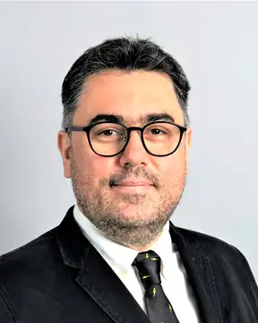

Dimitrios C. Tzarouchis, Ph.D.
Senior R&D Engineer · Antennas, Metamaterials & 6G
I design antennas and metasurfaces, and I work out the electromagnetic physics behind them. At Intracom Telecom I lead R&D on mm-wave and sub-THz antenna systems for 6G: phased arrays, reflectarrays and reconfigurable intelligent surfaces. I also act as a part-time consulting scientist for the National Hellenic Research Foundation. Before that I worked on wave-based analog computing with Nader Engheta at the University of Pennsylvania, and on electromagnetic scattering at Aalto University.
From the lab bench to the network
My day job is hardware that has to work: I lead the design, prototyping and measurement of mm-wave and E-band antenna systems for 6G (phased arrays, reflectarrays, microstrip arrays and waveguide filters at 24–30 GHz and 71–86 GHz), validated on the VNA and in the anechoic chamber.
What I work on
mm-wave & sub-THz antennas
Phased arrays, reflectarrays and microstrip arrays at 24–30 GHz and E-band (71–86 GHz), with waveguide filters, feed networks, and VNA and anechoic-chamber measurements.
Reconfigurable surfaces & wave-based computing
Reconfigurable metadevices that solve equations and invert matrices with waves, and inverse design of metastructures.
Scattering, resonances & characteristic modes
Mie resonances, plasmonic nanoparticles and characteristic-mode theory, the subject of my doctoral work with A. Sihvola.
Biomedical & transparent antennas
Metamaterial-inspired wearable pads, and antennas made from optically transparent conductive films.
News
- Member of the Technical Program Committee of AES 2027, the 13th International Conference on Antennas & Electromagnetic Systems, taking place in Athens, 16–19 March 2027.
- Invited review Metadevices that compute (neuromorphic nanophotonics) submitted to npj Nanophotonics; preprint on arXiv.
- Completed my term (2021–2026) as Early Career Representative of URSI Commission B.
- Completed my term as Associate Editor of the URSI Radioscience Bulletin (2021–2026).
- Invited talk at the NKUA MSc Open Day (Electronics–Radioelectrology), Athens. Guest Associate Editor for the Optical Materials Express feature issue honoring N. Engheta's 70th birthday.
- Non-uniform patch antenna array with feeding network for 5G/6G mm-wave presented at IEEE iWAT 2026, Liverpool.
- Open-source Python tool wavecheck released (v0.1).
- Invited talk at Penn: Taming Electromagnetic Waves with Metamaterials: From Fundamental Theory to Industrial Applications, Workshop celebrating N. Engheta's 70th birthday.
- Programmable wave-based analog computing machine published in Nature Communications; later a Research Highlight in Nature Reviews Electrical Engineering.
♪ Away from the lab I'm a musician, and I sing with the music-theatre ensemble Κατά-Φωνή.
Metrics from Google Scholar, checked November 2026.